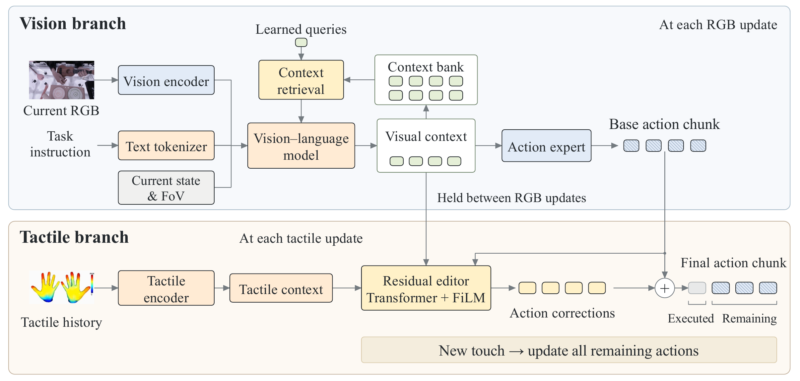

Retain visual history
A compact context bank carries past observations into the next visual decision.
Tactile World–Language–Action
Visual planning. Tactile correction. Shared context.
A history-aware visual policy plans the motion. A lightweight tactile editor corrects it between visual updates—without running vision again.
Reported in the paper. The 30% reduction is relative to the strongest reported EgoTouch baseline.
Paper overview
Contact-rich manipulation requires tactile corrections guided by visual information and past observations. We introduce T-WLA, a world–language–action architecture that connects visual planning with tactile correction through cached visual context. At each visual update, the visual branch combines the current image with context from previous observations to generate an action chunk and update this context.
Between visual updates, a lightweight tactile editor combines the cached context with recent tactile context to produce residual corrections without rerunning the visual branch. During training, future-image and future-pressure prediction help the model learn features useful for action generation and correction. We evaluate T-WLA on tactile-conditioned hand-motion prediction using EgoTouch and Tachin, and on four real-world dexterous manipulation tasks.
Method
Visual context links action planning to tactile correction. Each new touch observation can update the remaining actions in the active chunk.

A compact context bank carries past observations into the next visual decision.
The tactile editor reads cached visual context, recent touch, and the base action chunk.
Future-image and pressure prediction shape control features during training. Both prediction heads are removed at deployment.
Real robot demonstrations
Choose a task, then switch methods. RGB, tactile feedback, and recorded 3D motion share one playback timeline.
Each demo is an individual recorded sequence, not an aggregate success result. The 3D view replays recorded joint motion; it is not a separate simulation rollout. Nonempty recording notes are shown within the player.
Human hand-motion prediction
A real example compares T-WLA with SmolVLA + tactile. Shared-wrist mesh and fingertip views reveal differences in predicted finger articulation.
Reported results
Dataset-level errors and closed-loop robot success, as reported in the paper. These results are separate from the individual video examples above.
Wrist-relative finger-joint MPJPE (cm). Lower is better.
| Method | EgoTouch | Tachin |
|---|---|---|
| Strongest reported baseline | 0.50 | 0.63 |
| T-WLA | 0.35 | 0.46 |
| Relative reduction | 30.00% | 26.98% |
EgoTouch: macro-average across five environments. Tachin: complete held-out test set. Baseline selection is specific to this metric.
Task success (%). Higher is better.
| Controller | Egg | Sheet | Cup | Bag | Avg. |
|---|---|---|---|---|---|
| SmolVLA | 0 | 28 | 0 | 39 | 16.75 |
| SmolVLA + tactile | 0 | 30 | 1 | 37 | 17.00 |
| T-WLA | 18 | 72 | 17 | 82 | 47.25 |
| T-WLA + tactile | 21 | 78 | 17 | 84 | 50.00 |
Average over egg handling, single-sheet pickup, paper-cup nesting, and paper-bag opening. Training uses 30 demonstrations per task.